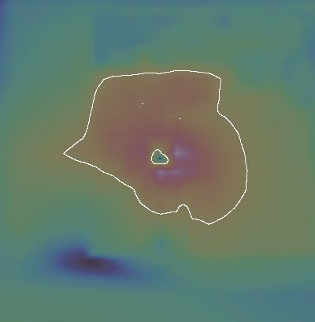
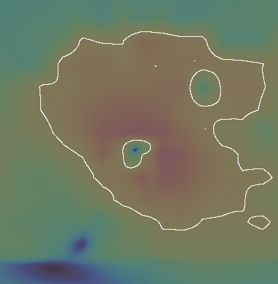
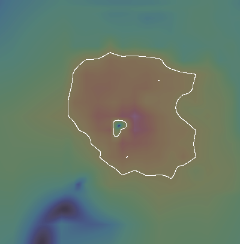
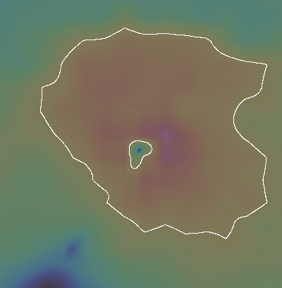
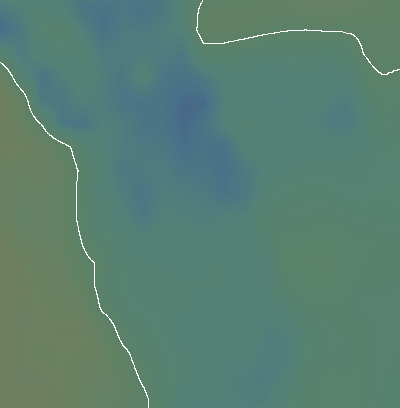
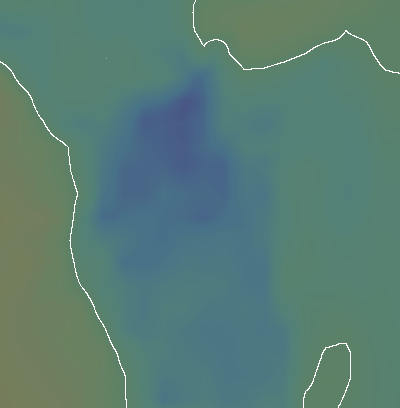

BEFORE z6: NOAA GFS box (native recovery)
BEFORE z6.5: Open-Meteo gfs_seamless box (= HRRR)
AFTER z6: box A + lane
AFTER z6.5: box B + lane
Florida z7, the florida_east_coast GFS 0.25 tile (no lane)
Florida z7, the same tile + the HRRR lane